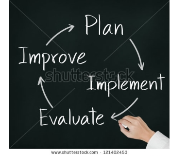

CoBro Consulting is a research and consulting firm that provides evaluation services and data management systems within the education field, nationwide. We specialize in development and support of large scale data management systems, and comprehensive program evaluation, including survey services, data analysis, and professional results reporting. Our senior staff has extensive experience providing data management and evaluation services for education reform programs across the country. One of CoBro Consulting’s core products is the COMPASS system, created especially for education programs to facilitate data management, student tracking, statistical analysis, and progress reporting. Our programmers customize COMPASS to meet each client’s needs and to maximize the efficiency and evaluation capacity of each program. We are confident that CoBro Consulting services and systems offer an ideal solution to educational program data management and evaluation needs. As such, are continually looking to establish successful partnerships with new programs and clients. Please contact us for more information and a request a quote today! |
 |